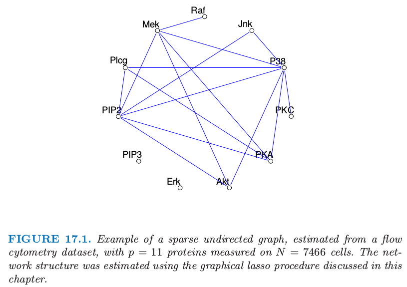
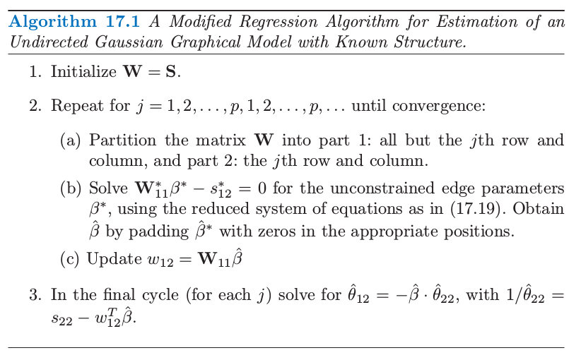
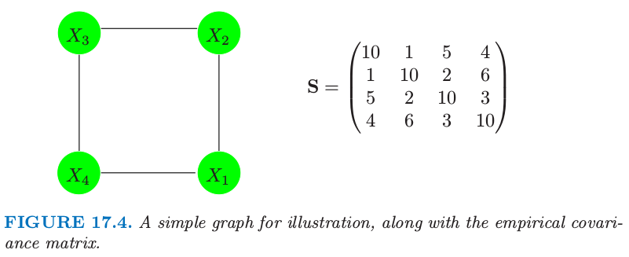
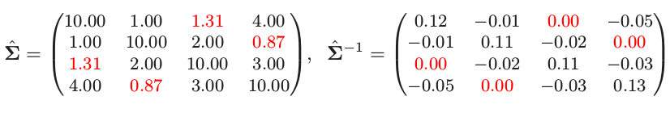
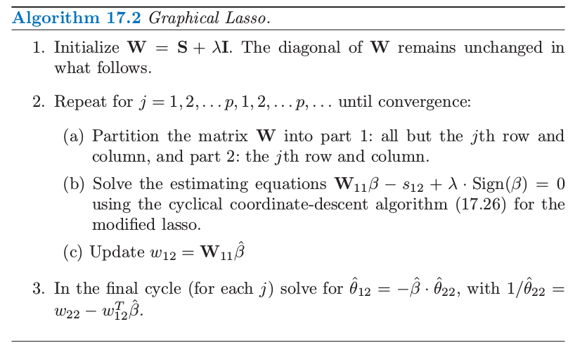
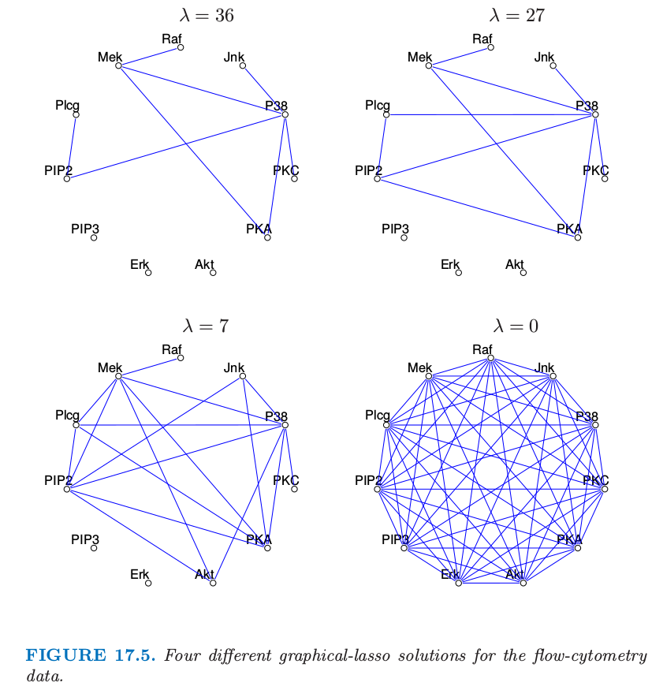

17.3 连续变量的无向图模型¶
这里我们考虑所有变量都是连续变量的马尔科夫网络。这样的图模型几乎总是用到高斯分布，因为它有方便的分析性质。我们假设观测值服从均值为 \(\mu\)，协方差为 \(\mathbf \Sigma\) 的多元高斯分布。因为高斯分布至多表示二阶的关系，所以它自动地编码了一个成对马尔科夫图。
!!! note “weiya 注：” 因为在高斯分布的密度函数中，指数项中关于随机变量的阶数最多是二次，所以说它至多能表示二阶的关系。
图 17.1 的图是高斯图模型的一个例子。

图 17.1. 稀疏无向图的例子，从 flow-cytometry 数据集中估计得到，含有 \(p=11\) 个蛋白质在 \(N=7466\) 个细胞中的测量值。网络结构是通过本章后面将要讨论的图 lasso 过程进行估计的。
高斯分布有个性质是所有的条件分布也是高斯分布。协方差矩阵的逆 \(\mathbf\Sigma^{-1}\) 包含变量之间的 偏协方差 (partial covariances) 信息；也就是，在给定其它变量的条件下，\(i\) 与 \(j\) 的协方差。特别地，如果 \(\mathbf {\Theta=\Sigma^{-1}}\) 的第 \(ij\) 个元素为 0，则变量 \(i\) 和 \(j\) 在给定其它变量情况下是条件独立的。（练习 17.3）
!!! info “weiya 注：Ex. 17.3” 已解决，详见 Issue 136: Ex. 17.3
验证某个变量在给定剩余变量的条件下的条件分布是有好处的，其中 \(\mathbf\Theta\) 的作用显而易见。假设我们进行分割 \(X=(Z,Y)\)，其中 \(Z=(X_1,\ldots,X_{p-1})\) 包含前 \(p-1\) 个变量并且 \(Y=X_p\) 是最后一个。于是我们在给定 \(Z\) 下有条件分布（比如，Mardia et al., 19791）
其中我们将 \(\mathbf \Sigma\) 分割成 $\( \mathbf\Sigma= \Big( \begin{array}{ll} \mathbf \Sigma_{ZZ}&\sigma_{ZY}\\ \sigma_{ZY}^T&\sigma_{YY} \end{array} \Big) \tag{17.7}\label{17.7} \)\( \eqref{17.6} 的条件均值与 \)Y\( 在 \)Z\( 上的总体多重线性回归有完全一样的形式，回归系数为 \)\beta=\mathbf\Sigma^{-1}_{ZZ}\sigma_{ZY}\(。如果我们对 \)\mathbf\Theta\( 用同样的方式进行分割，因为 \)\mathbf{\Sigma\Theta=I}\(，由分块矩阵的求逆公式有 \)\( \theta_{ZY}=-\theta_{YY}\cdot\mathbf\Sigma_{ZZ}^{-1}\sigma_{ZY}\tag{17.8} \)\( 其中 \)1/\theta_{YY}=\sigma_{YY}-\sigma_{ZY}^T\mathbf\Sigma_{ZZ}^{-1}\sigma_{ZY}>0\(。因此 \)$
\tag{17.9}\label{17.9} $$ 我们可以从这里学到两件事情：
\eqref{17.6} 中的 \(Y\) 对 \(Z\) 的依懒性只与均值项有关。显然，\(\beta\) 中的 \(0\) 元素，也是 \(\theta_{ZY}\) 中的 \(0\) 元素，意味着 \(Z\) 中的对应元素与 \(Y\) 在给定其余变量的条件下是独立的。
我们可以通过多重线性回归学习这个依赖性结构。
因此 \(\mathbf\Theta\) 捕捉了所有二阶信息（结构上的和定量的），这些信息是描述每个顶点在给定剩余点时的条件分布所需要的，这也称为高斯图模型的“自然”参数。
!!! note “原书脚注：” 从高斯图模型得到的分布是 Wishart 分布。它属于指数族，其中自然 (natural, or “canonical”) 参数为 \(\mathbf\Theta=\mathbf\Sigma^{-1}\). 实际上，偏最大化的对数似然 \eqref{17.11} 是 Wishart 对数似然（忽略常数差异）。
另外一个（不同）图模型为 协方差图 (covariance) 或者 相关网络 (relevance network)，其中如果顶点的对应变量间的协方差（不是偏协方差）为 \(0\) 则用双向边连接这些顶点。这在基因问题中很常见，特别地见 Butteet et al. (2000)2。这些模型的负对数似然是非凸的，使得计算更加有挑战（Chaudhuri et al.，20073）。
图结构已知时参数的估计¶
给定 \(X\) 的一些观测值，我们想要估计无向图的参数，该无向图近似了它们的联合分布。首先假设图是完全的（全连通）。我们假设有 \(N\) 个多维正态观测值 \(x_i,i=1,\ldots,N\)，均值为\(\mu\)，协方差为\(\mathbf \Sigma\)。令
为观测值的协方差矩阵，\(\bar x\) 为样本均值向量。忽略掉常数，其对数似然可以写成 $\( \ell(\mathbf \Theta)=\mathrm{log \;det}\mathbf\Theta-\mathrm{trace}(\mathbf{S\Theta})\tag{17.11}\label{17.11} \)\( \eqref{17.11} 中我们已经对均值参数 \)\mu\( 进行了偏 (partially) 最大化。\)-\ell(\mathbf \Theta)\( 是 \)\mathbf \Theta\( 的凸函数。可以很简单地证明 \)\mathbf\Sigma\( 的极大似然估计为 \)\mathbf S$。
现在为了使图更有用（特别在高维数据集中）假设某些边是缺失的，举个例子，图 17.1 中 PIP3 和 Erk 之间的边是某条缺失边。正如我们所见，对于高斯分布这意味着 \(\mathbf{\Theta=\Sigma^{-1}}\) 对应的值为 \(0\)。因此我们现在想要在某些预先定义的参数为 \(0\) 的子集的约束下最大化 \eqref{17.11}。这是等值约束凸优化问题，研究者们已经提出了许多解决它的方法，特别地，迭代比例拟合过程 (iterative proportional fitting procedure)（Speed and Kiiveri，19964）。该方法及其它方法在 Whittaker (1990)5 和 Lauritzen (1996)6 中作了总结。这些方法研究简化问题，这产生于将图分解成最大团的过程中，正如在之前的章节中描述的那样。这里我们列出一种简单的轮换方法，用不同的方式来研究稀疏性。这种方式的效果会在我们讨论图结构估计问题时变得明显。
受 \eqref{17.6} 和 \eqref{17.9} 式的启发，这个思想基于线性回归。特别地，假设我们想要估计与给定顶点 \(i\) 相连的顶点的边参数 \(\theta_{ij}\)，那些没有相连的边为 \(0\)。于是这似乎表明，顶点 \(i\) 在与其相关的结点上的线性回归可能会提供一个合理的估计。但是这忽略了回归中预测变量的依赖性结构。事实表明，如果我们进行回归时采用当前（基于模型的）对预测变量叉积矩阵的估计，这会给出了正确的解，并且能精确地解出带约束的最大似然问题。我们现在给出细节。
为了约束对数似然 \eqref{17.11}，我们对缺失边加上拉格朗日常数 $\( \ell_C(\mathbf \Theta)=\mathrm{log\; det}\mathbf\Theta-\mathrm{trace}(\mathbf{\mathbf S\Theta})-\sum\limits_{(j,k)\not\in E}\gamma_{jk}\theta_{jk}\tag{17.12}\label{17.12} \)\( 最大化 \eqref{17.12} 的梯度等式可以写成 \)\( \mathbf{\Theta^{-1}-S-\Gamma=0}\tag{17.13}\label{17.13} \)\( 这利用了 \)\mathrm{log; det}\mathbf\Theta\( 的导数等于 \)\mathbf \Theta^{-1}\( 的事实（如，Boyd and Vandenberghe, 2004，p641[^7]）。\)\mathbf\Gamma$ 为所有含缺失边的非零拉格朗日参数值。
我们将要展示我们可以怎么应用回归来求解 \(\mathbf\Theta\) 以及每次求解它的逆 \(\mathbf{W=\Theta^{-1}}\) 的一行和一列。为了简单我们关注最后一行和最后一列。则 \eqref{17.13} 的右上块可以写成 $\( w_{12}-s_{12}-\gamma_{12}=0\tag{17.14}\label{17.14} \)\( 这里我们将矩阵分块成如 \eqref{17.7} 所示：第一部分为前 \)p-1\( 列和行，第 2 部分为第 \)p\( 行和列。\)\mathbf W\( 和它的逆 \)\mathbf\Theta\( 以同样的方式分块，我们有 \)\( \Big(\begin{array}{ll} \mathbf W_{11}& w_{12}\\ w_{12}^T&w_{22} \end{array}\Big) \Big(\begin{array}{ll} \mathbf\Theta_{11}& \theta_{12}\\ \theta_{12}^T&\theta_{22} \end{array}\Big) =\Big(\begin{array}{ll} \mathbf I& 0\\ 0^T& 1 \end{array}\Big) \tag{17.15} \)\( 这意味着 \)$
\mathbf W_{11}\beta-s_{12}-\gamma_{12}=0\tag{17.18}\label{17.18} $\( 这些可以解释成 \)X_p\( 在其他预测变量上的约束回归的 \)p-1\( 个估计等式，除了观测均值的叉积矩阵 \)\mathbf S_{11}\( 替换成了 \)\mathbf W_{11}$ ，这也是根据模型对当前协方差的估计。
我们可以通过简单的子集回归来求解 \eqref{17.18}。假设 \(\gamma_{12}\) 中有 \(p-q\) 个非零元——比如，\(p-q\) 条边约束为 0。这 \(p-q\) 行没有包含任何信息，而且可以移除掉。更进一步，我们可以通过移除 \(p-q\) 个 \(0\) 元素将 \(\beta\) 退化成 \(\beta^\*\)，得到退化的 \(p\times p\) 的等式系统
解为 \(\hat\beta^\*=\mathbf {W_{11}^\*}^{-1}s_{12}^\*\)。再加上 \(p-q\) 个 \(0\) 元得到 \(\hat\beta\)。
尽管从 \eqref{17.16} 看出似乎我们只恢复了\(\theta_{12}\) 乘以缩放因子 \(1/\theta_{22}\)，但可以很简单地证明 $\( \frac{1}{\theta_{22}}=w_{22}-w_{12}^T\beta\tag{17.20} \)\( (采用分块矩阵求逆)。因为 \eqref{17.13} 的 \)\mathbf\Gamma\( 对角元为 0，则 \)w_{22}=s_{22}$。
这导出了在缺失边的约束下，用来估计 \(\hat{\mathbf W}\) 和它的逆 \(\mathbf {\hat\Theta}\) 的算法 17.1 中给出的简单迭代过程。

注意到这个算法概念上是说得通的。图估计的问题不是 \(p\) 个独立的回归问题，而是 \(p\) 个成对问题。步骤 (b) 中公共 \(\mathbf W\) 的应用，而不是观测的叉积矩阵，将问题以合适的方式结合在一起。惊讶的是，我们在文献中找不到这个过程。然而这与 Dempster(1972)8 的协方差选择过程有关，而且在分割上与 Chaudhuri et al. (2007)3 提出的用过协方差图的迭代条件拟合过程很相似。

图 17.4. 一个简单的用于说明的图，以及经验协方差阵。
这里是个小例子，选自 Whittaker(1990)5。假设我们的模型如图 17.4 描述，经验协方差阵为 \(\mathbf S\)。我们应用算法 (17.1) 来解决这个问题；举个例子，在步骤 (b) 对变量 1 的修改后的回归中，删掉变量 3。这个过程很快收敛到解

注意到 \(\hat{\mathbf\Sigma} ^{-1}\) 的 0 元素，对应缺失边 (1,3) 和 (2,4)。也注意到 \(\hat{\mathbf \Sigma}\) 中对应的元素是唯一与 \(\mathbf S\) 不同的元素。\(\mathbf \Sigma\) 估计是有时称为 \(\mathbf S\) 的正定“补 (completion)”。
!!! info “weiya 注：” 这篇笔记记录了算法 17.1 的具体实现过程。
图结构的估计¶
大多数情况下，我们不知道哪些边要从图中去掉，因此想试图从数据本身找出。最近几年很多作者提出用于这个目的的 \(L_1\) (lasso) 正则化。
!!! note “weiya 注：” 省略图中的边，有点类似于做变量选择，而 lasso 正是应对变量选择的“绝世武功”!:joy:
Meinshausen and Bühlmann (2006)9 对这个问题采取简单的方式：不是试图完全估计 \(\mathbf \Sigma\) 或者 \(\mathbf \Theta=\mathbf \Sigma^{-1}\)，他们仅仅估计非零的组分 \(\theta_{ij}\)。为了实现这点，它们将每个变量看成响应变量而其它的变量作为预测变量进行拟合 lasso 回归。如果变量 \(i\) 在变量 \(j\) 上的估计系数为非零，或者（并且）\(j\) 变量在 \(i\) 上的估计系数为非零，则组分 \(\theta_{ij}\) 估计为非零。它们证明这个过程渐近地一致估计了 \(\mathbf\Theta\) 的非零元的集合。
我们可以采取更有系统的含有 lasso 惩罚的方法，接着上一节的讨论。考虑最大化带惩罚的对数似然 $\( \mathrm{log\; det}\mathbf\Theta-\mathrm{trace}(\mathbf{S\Theta})-\lambda\Vert\mathbf \Theta\Vert_1\tag{17.21} \)\( 其中 \)\Vert\Theta\Vert^{-1}\( 为 \)L_1\( 范数——\)\mathbf \Sigma^{-1}\( 的元素的绝对值之和，并且我们忽略了常数值。这个带惩罚的似然函数的负值是关于 \)\mathbf \Theta$ 的凸函数。
!!! note “weiya 注：” 注意区分矩阵的 \(L_1\) 范数和 \(p\) 范数 $\( \Vert A\Vert_p=\underset{x\neq 0}{\mathrm{sup}}\frac{\Vert Ax\Vert_p}{\Vert x\Vert_p}\\ \Vert A\Vert_1 = \underset{1\le j\le n}{\mathrm{max}}\sum\limits_{i=1}^m\vert a_{ij}\vert\\ \Vert A\Vert_\infty = \underset{1\le i\le n}{\mathrm{max}}\sum\limits_{j=1}^n\vert a_{ij}\vert\\ \Vert A\Vert_2 \le \Big(\sum\limits_{i=1}^m\sum\limits_{j=1}^m\vert a_{ij}\vert^2\Big)^{1/2} =\Vert A\Vert_F \)$
事实证明，可以采用 lasso 得到含惩罚的对数似然的精确的最大值点。特别地，我们仅仅需要把算法 17.1 中修改的回归步骤 (b) 换成修改的 lasso。下面是具体细节。
梯度等式 \eqref{17.13} 的类似形式为 $\( \mathbf{\Theta^{-1}-S}-\lambda\cdot \mathrm{Sign}(\mathbf \Theta)=0\tag{17.22} \)\( 这里我们采用 **次梯度 (sub-gradient)** 记号，如果 \)\theta_{jk}\neq 0\(，则 \)\mathrm{Sign}(\theta_{jk})=\mathrm{sign}(\theta_{jk})\(，如果 \)\theta_{jk}=0\(，则 \)\mathrm{Sign}(\theta_{jk})\in[-1,1]\(。继续上一节的讨论，我们得到 \eqref{17.18} 的相似形式 \)\( \mathbf W_{11}\beta-s_{12}+\lambda\cdot \mathrm{Sign}(\beta)=0\tag{17.23} \)\( （回忆 \)\beta\( 和 \)\theta_{12}$ 有相反的符号）。我们将会看到这个系统完全等价于 lasso 回归的估计等式。
考虑一般的回归设定，输出变量为 \(\mathbf y\)，且预测矩阵为 \(\mathbf Z\)。lasso 对下式进行最小化 $\( \frac{1}{2}(\mathbf y-\mathbf Z\beta)^T(\mathbf y-\mathbf Z\beta)+\lambda\cdot\Vert\beta\Vert_1\tag{17.24} \)\( 梯度表达式为 \)\( \mathbf{Z^TZ}\beta-\mathbf{Z^Ty}+\lambda\cdot \mathrm{Sign}(\beta)=0\tag{17.25} \)\( 所以乘上因子 \)1/N\(，\)\mathbf {Z^Ty}\( 是 \)s_{12}\( 的类比，并且我们用 \)\mathbf W_{11}\( 替换 \)\mathbf{Z^TZ}$，从我们当前的模型估计叉积矩阵。
这一过程称为 graphical lasso，由 Friedman et al. (2008b)9 提出，这建立在 Banerjee et al. (2008)10。这总结在算法 17.2 中。

Friedman et al. (2008b)9 采用成对坐标下降方法（3.8.6 节）来在一步求解修改的 lasso 问题。下面是图 lasso 算法的成对坐标下降细节。令 \(\mathbf {V=W_{11}}\)，更新式有如下形式 $\( \hat\beta_j\leftarrow S(s_{12j}-\sum\limits_{k\neq j}V_{kj}\hat\beta_k,\lambda)/V_{jj}\tag{17.26} \)\( \)j=1,2,\ldots,p-1,1,2,\ldots,\ldots,p-1,\ldots\(，其中 \)S\( 为软阈限算子 \)\( S(x,t)=\mathrm{sign}(x)(\vert x\vert-t)_+\tag{17.27} \)$ 这个过程对预测变量循环直到收敛。
可以简单地证明得到解矩阵 \(\mathbf W\) 的对角元 \(w_{jj}\) 为 \(s_{jj}+\lambda\)，这些是在算法 17.2 的步骤 1 中固定的。
!!! note “原书脚注：” 可以提出问题 (17.21) 的另一个构造，我们不对 \(\mathbf \Theta\) 的对角元进行惩罚。则解矩阵的对角元 \(w_{jj}\) 为 \(s_{jj}\)，算法的剩余部分没有改变。
Graphical lasso 算法非常快，可以在一分钟之内求解含 1000 个结点的中等稀疏的问题。可以很简单地修改算法得到特定边的惩罚参数 \(\lambda_{jk}\)；因为 \(\lambda_{jk}=\infty\) 会强制使 \(\hat\theta_{jk}\) 为 0，这个算法归入到算法 17.1 中。通过将稀疏逆协方差矩阵问题作为一系列回归，可以快速地计算并且验证解的路径作为惩罚参数\(\lambda\) 的函数。更多的细节可以在 Friedman et al. (2008b)9 中找到。
图 17.1 显示了将图 lasso 应用到 flow-cytometry 数据集中的结果。这里 lasso 惩罚参数 \(\lambda\) 设为14。实际中检验随着 \(\lambda\) 变化而得到的不同的图是很有用的。图 17.5 显示了 4 个不同的解。当惩罚参数增大时图变得更稀疏。

图 17.5. flow-cytometry 数据的 4 个不同的图 lasso 解。
最后注意到图模型中有些点的值可以没有观测，也就是，缺失或者隐藏。如果一个点上只有一些值缺失，EM 算法可以用来插补缺失值（练习 17.9）。
!!! note “weiya 注: Ex. 17.9” 已解决，详见 Issue 137: Ex. 17.9。
然而，有时整个点是隐藏的。在高斯模型中，如果一个点所有的值都缺失，由于线性，可以简单地对缺失的结点进行平均，使得在观察到的结点上产生另一个高斯模型。因此隐藏结点的引入不会扩大观测点的最终模型；实际上，在协方差上加了额外的结构。然而在离散模型中（接下来讨论），固有的非线性使隐藏单元成为扩展模型的有力方式。
- 1
Mardia, K., Kent, J. and Bibby, J. (1979). Multivariate Analysis, Academic Press.
- 2
Butte, A., Tamayo, P., Slonim, D., Golub, T. and Kohane, I. (2000). Discovering functional relationships between RNA expression and chemotherapeutic susceptibility using relevance networks, Proceedings of the National Academy of Sciences pp. 12182–12186.
- 3(1,2)
Chaudhuri, S., Drton, M. and Richardson, T. S. (2007). Estimation of a covariance matrix with zeros, Biometrika 94(1): 1–18.
- 4
Speed, T. and Kiiveri, H. T. (1986). Gaussian Markov distributions over finite graphs, Annals of Statistics 14: 138–150.
- 5(1,2)
Whittaker, J. (1990). Graphical Models in Applied Multivariate Statistics, Wiley, Chichester.
- 6
Lauritzen, S. and Spiegelhalter, D. (1988). Local computations with probabilities on graphical structures and their application to expert systems, J. Royal Statistical Society B. 50: 157–224.
- 8
Dempster, A. (1972). Covariance selection, Biometrics 28: 157–175.
- 9(1,2,3,4)
Friedman, J., Hastie, T. and Tibshirani, R. (2008b). Sparse inverse covariance estimation with the graphical lasso, Biostatistics 9: 432–441.
- 10
Banerjee, O., Ghaoui, L. E. and d’Aspremont, A. (2008). Model selection through sparse maximum likelihood estimation for multivariate gaussian or binary data, Journal of Machine Learning Research 9: 485–516.